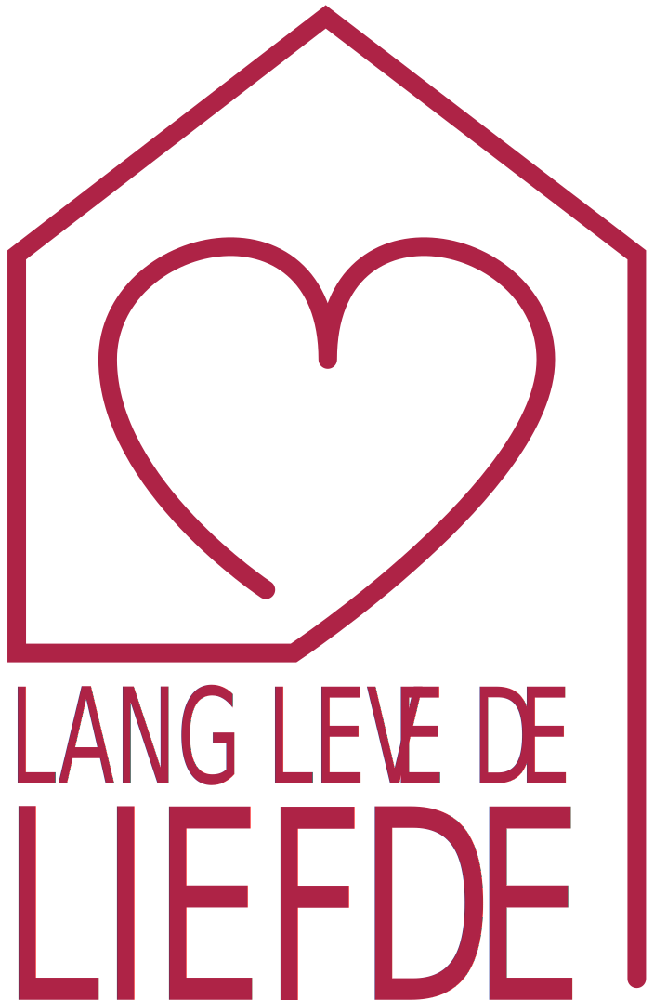

Lang Leve De Liefde - Date Vragen en Stellingen
Een hele hoop vragen om te stellen als je het even niet meer weet.
Met deze vragen uit de serie Lang Leve De Liefde kun je elkaar nog beter leren kennen!
Klik hier om naar de
date
kaarten te gaan!
Houd deze website in de lucht! Doneer hier!
Lang Leve De Liefde - Partner Vragen en Stellingen
Stel je wilt het met je partner wat spannender maken of misschien wil je wel erg persoonlijke details weten maar vind je dat lastig om te vragen?
Met deze kaarten gebaseerd op vragen uit de serie Lang Leve De Liefde kun je elkaar een beetje uitdagen!
Klik hier om naar de
partner
kaarten te gaan!
Lang Leve De Seks - Willekeurige posities om te proberen!
Merk je steeds terug te gaan naar de vertrouwde sekspartij maar wil je het wat opfrissen? Probeer dan wat van deze posities uit!
Klik hier om naar de
Seks
Posities te gaan!